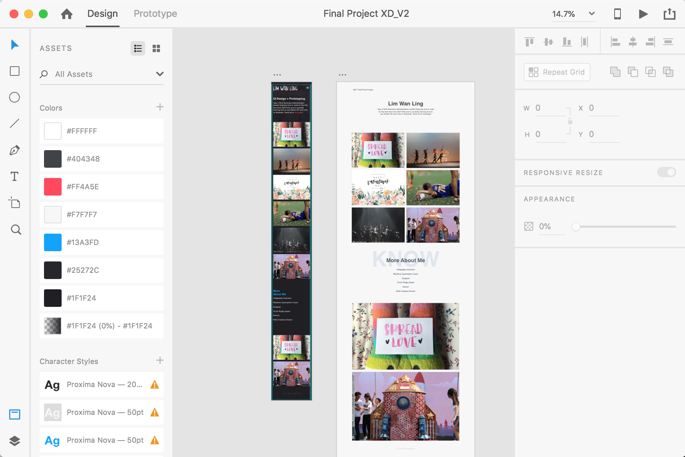
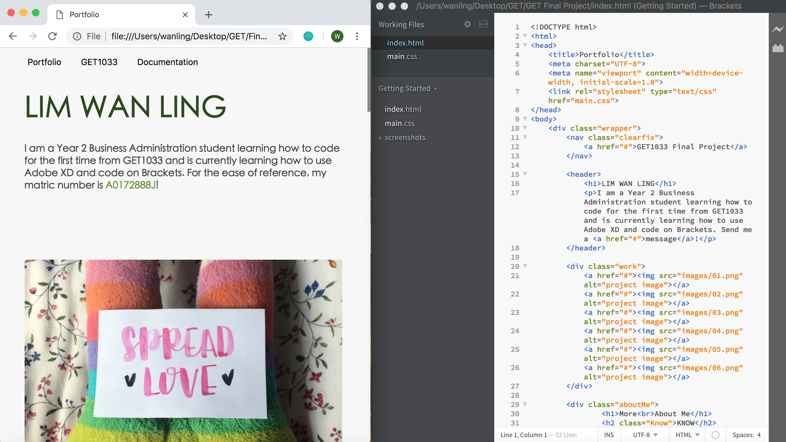
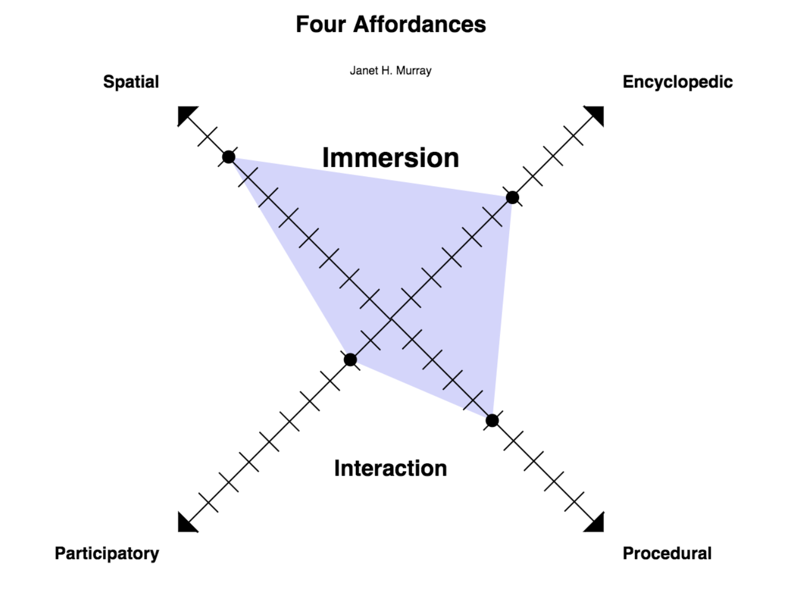
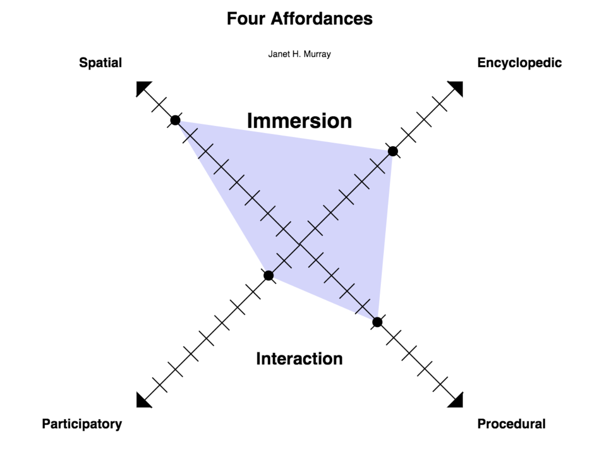

FINAL PROJECT
This is my GET1033 Final Project, a responsive online portfolio that is customizable based on my personal preference. It is my personal portfolio that I can share with potential employers or even friends, as they can easily browse through online to know more about me. This project is designed on Adobe XD and coded from scratch on Brackets, before being transferred to sublime text for convenience.
1. Adobe XD
2. Brackets
3. Written in HTML, CSS, JavaScript
4. Overlapping words (-webkit-transform: translateX(-50%))
5. Hover
6. Scrollbar (-webkit-scrollbar:)
7. Responsive feature (@media only screen and (max-width:__px))
8. Tabs (function openTab)
9. Side Navigation, full width on images
10. Videos
PROCESS
This project is done after many youtube tutorials and research. After learning from youtube how to design and code a responsive portfolio, I customized the webpage to my personal preference added many features to allow my portfolio to be more dynamic, interactive and informative.
1. ADOBE XD: First, I designed the look of the portfolio in mobile and web versions on Adobe XD. From Adobe XD, I was able to customise my content as well as the style of my content such as the font, the font colour and even the width of the images. In addition, I could take videos of how I intend to interact with my webpage and mobile application, which I felt was extremely useful for UI/UX designs. I had several versions of my portfolio before I settled with a white based design.

Screenshot of Adobe XD with the prototypes of my design
2. BRACKETS: Brackets is a modern, open source code editor with a primary focus on web development. The unique attribute of Brackets is its live html, css and js editing functionality. With a live preview of my code, I felt that Brackets was an appropriate platform for me to code my online portfolio as I could review my code live instead of constantly needing to refresh the page.

3. HTML, CSS, JavaScript: From my online research and tutorials, I learnt that I could use Hypertext Markup Language (HTML) to create the content for my webpage, use Cascading Style Sheets (CSS) to style the content coded in HTML, and JavaScript to make the content on my webpage interactive. With these programming languages, I first input the content such as headers, text and images with HTML, before styling my content with CSS (font, width size, opacity, etc.) and finally creating interactions with JavaScript (tabs, navigations).
4. OVERLAPPING WORDS: A challenge I faced in recreating my design in code is to overlap words on my webpage (overlapping the word "KNOW" over the words "more about me"). To achieve the overlapping effect, I utilised the CSS-webkit-transform property to transform the element "KNOW" to coincide with "more about me". In addition, by inputting the code "z-index = -1", I am able to put the word "KNOW" behind "more about me".
5. HOVER: After completing the style of my webpage, I started searching for features that I could add onto my webpage for it to be more dynamic. The first feature I added was the hover. With many images in my portfolio, I wanted the photo to come into focus when my cursor is over the photo. As such, I used the hover function, where the opacity of the photo will alter if my cursor is over the image. I added this function to the first 6 smaller images and the 2 large images, where the smaller images' come into focus should the cursor hover over them and the larger images will be faded should the cursor hover over them.
6. SCROLLBAR: The second feature I added was a scrollbar. By adding a vertical bar at the side of my webpage, I can improve the interaction of my portfolio with the user. With the scrollbar, the user is able to receive feedback through a visual updating of both the scrollbar elements and the scrolled content. I was able to add and customize the scrollbar through CSS, with the CSS-webkit-scrollbar property that allows me to customize the track, thumb and create interaction through the hover.
7. RESPONSIVE: In order to allow my mobile design to materialise, as well as ensure that the design will be suitable for any screen size, I wanted to create a responsive portfolio. This meant that the formatting and style of the portfolio will automatically resize, hide, shrink, or enlarge according to the size of the screen, making it look good on all devices. (computers, tablets, and even mobile phones!) As such, I added the 'meta' element, setting the viewport of the page, giving the browser instructions on how to control the page's dimensions and scaling. In addition, to allow my images to scale according to the browser size, I used the width property in CSS, and used percentages to determine how much of the screen should the image cover. For my content to alter after a certain screen size, I used the code '@media only screen and (max-width:____)';should the screen be lesser than a certain number of pixels, I will change the text alignment, move images from 2 a row to only 1, change the opacity of the images, and remove the "KNOW" from being behind "More About me". This followed my mobile design, and thus I was able to create my responsive online portfolio.
8. TABS: In order to have somewhere to document my process online, I decided to document my final project on my webpage itself. To do so, I needed tabs to section my documentation. Through HTML, I created toggable tabs by first creating buttons to open a specific tab content. This is done through adding the 'onclick' function and adding my tab content (what I am writing right now!) into the code. With CSS, I was able to style the buttons and tab content, such as changing the background color when the cursor hovers over the tabs or what the color when the tab is clicked. After that, I added JavaScript into HTML for the function 'openTab' to show the tab content when the tab is clicked.
9. SIDE NAVIGATION: To further add information on my webpage, I wanted to attach descriptions to my images without my webpage looking cluttered and disorganised. As such, I wanted to create side navigations for my images, where the user can find out more about a particular image by clicking on it. Due to time constraints, I was only able to create this feature on the 2 large images nearing the end of the webpage. This is done through creating an openNav function written in JavaScript, while adding the overlay content on HTML itself.
10. VIDEOS: To fully document my project and documentation onto my webpage, I wanted to upload Videos onto the webpage as well. These videos are taken by Adobe XD, as the program has this function that allows me to interact and preview the design I made on XD. To upload the video onto html, I wrote a code similar to uploading an image, using embed as the function. After that, I used CSS to determine the size, margin and opacity of the videos.
HOW IT WORKS
Navigate the page by clicking the tabs at the top right corner of the portfolio, scroll through the photos and click on the larger images for a detailed description of what it is about! Access the webpage from either your laptop, tablet or mobile and see the style of the website alter according to the device you use. On the computer, change the browser size and watch the webpage adjust accordingly as well. :)
WHAT DOES IT DO?
This portfolio looks aesthetic and pleasing to the eye to a user of any device, with interactive features that is both interactive and engaging to the user. Moreover, it is especially informative to employers to know about me, as not only can they find these information in a user-friendly and interesting manner, my ability to design and code webpages is directly demonstrated.
WHY DID YOU MAKE IT?
I am a creative person with an eye for aesthetics. I enjoy designing, as well as creating art in my free time. Being a Business student, I am constantly pressured to have a good portforlio to present to my future employers. In order to appeal to employers and stand out from the crowd, I wanted to create an online responsive website designed by myself as a proof of my creativity and artistic skills, whilst providing them the necessary information about myself in a succinct and aesthetically-pleasing manner. Learning how to code a website from scratch is a useful skill that I can utilise now and in the future. Moreover, I wanted to learn how to translate physical art into the digital world, and by allowing me to design a website, I was able to apply my aesthetic skills onto a digital artifact. Moreover, this project allows me to apply my knowledge learnt from GET1033 regarding html, css and javascript. Hence, I wanted to create this responsive portfolio as a way to text my coding knowledge as well as for me to learn how to customize my own designs for future use.
IMPROVEMENTS
In the future, I want to add descriptions onto every image. Though it may be tedious, with an adequate amount of time to work on this project, I will be able to do it. I will make changes to this website such that it will not just be a documentation but will really be a responsive portfolio that I can send to potential employers. More importantly, I will be adding even more interactions and features to the website. These interactions include adding weblinks, "if this then that" interactions to link to other forms of media (such as email, social media) and many more that I can research and develop on. I can create even more websites in the future on my own for different purposes, instead of relying on templates from web browsers.
FINAL PRODUCT
ANALYSIS
How does your project connect to ideas you have learned?
This project is related to the idea of Networks, the topic of connecting computers from Week 5. This is so as my project is a web browser that can be accessible at any time and any place, from any computer by anyone. Once I submit this project, it will also generate its unique Uniform Resource Locator (URL), a link that can be accessed by anyone. This reminds me of how computers are connected to each other, and how this network can be generated as a result of these web developments.
Furthermore, the project utilises rhetoric, which is the art of effect or persuasive communication through techniques such as written, visual or procedural rhetoric. Written Rhetoric is demonstrated through words explaining what I do and information about me in the headers of the webpage, text in the tabs and descriptions of the images. Users reading through this content will have gained more knowledge about me and about what I do. Visual Rhetoric is a means of communication through the use of visual images and text. Through images of my life, such as photos of me with a touch rugby ball or me dancing on stage, I am able to demonstrate elements of my life. Moreover, through the aestheically appealing visuals of the project, I am able to showcase my design ability and creativity to the user. In all, rhetoric is able to use language effectively to persuade the reader to have a better impression of me (Should the reader be an employer, these rhetoric techniques can serve to convince them to hire me!)
In addition, this project connects me to the idea of Bits and Atoms, the topic from Week 8. The project is a demonstration of graphical use interface (GUI), as it presents digital information through a screen, a physical manifestation of computation that users are able to interact with.
Analyse the affordances of digital media it uses.
This project uses the affordances of digital media to different extents, as demonstrated in the image below.

How does your project connect to ideas you have learned?
This project is related to the idea of Networks, the topic of connecting computers from Week 5. This is so as my project is a web browser that can be accessible at any time and any place, from any computer by anyone. Once I submit this project, it will also generate its unique Uniform Resource Locator (URL), a link that can be accessed by anyone. This reminds me of how computers are connected to each other, and how this network can be generated as a result of these web developments.
Furthermore, the project utilises rhetoric, which is the art of effect or persuasive communication through techniques such as written, visual or procedural rhetoric. Written Rhetoric is demonstrated through words explaining what I do and information about me in the headers of the webpage, text in the tabs and descriptions of the images. Users reading through this content will have gained more knowledge about me and about what I do. Visual Rhetoric is a means of communication through the use of visual images and text. Through images of my life, such as photos of me with a touch rugby ball or me dancing on stage, I am able to demonstrate elements of my life. Moreover, through the aestheically appealing visuals of the project, I am able to showcase my design ability and creativity to the user. In all, rhetoric is able to use language effectively to persuade the reader to have a better impression of me (Should the reader be an employer, these rhetoric techniques can serve to convince them to hire me!)
In addition, this project connects me to the idea of Bits and Atoms, the topic from Week 8. The project is a demonstration of graphical use interface (GUI), as it presents digital information through a screen, a physical manifestation of computation that users are able to interact with.
Analyse the affordances of digital media it uses.
This project uses the affordances of digital media to different extents, as demonstrated in the image below. 
(Credit to Dennis for making this openprocessing artwork for us to better visualise the 4 Affordances!)
SPATIAL: The spatial affordance is about whether the digital media is navigable as an information repository and/or virtual place. This project uses the spatial affordance to the largest extent, as the web browser is a virtual place accessible to any user to store information.
ENCYCLOPEDIC: The encyclopedic affordance is about whether the digital media contains a very high capacity of information in multiple media formats. This affordance is present in this project as the webpage contains a large amount of text (from this documentation and descriptions), pictures (background images, imported images) and videos. As it contains information about me and what I have done in multiple media formats, there is encyclopedic affordance.
PROCEDURAL: The procedural affordance is about whether the digital media is composed of executable rules. Through the coding of this webpage, there has been several rules that have been set for the webpage to follow. Rules include a set of actions to follow based on external output, such as a click, a hover, or the resizing of the web browser. For instance, should the screen size be lesser then 760 pixels, the text will align to the left, the images will collapse to one per row, the word "KNOW" will disappear and the scrollbar will thin. As evidenced, rules have been set as the web browser is programmed to act according to a particular set of rules.
PARTICIPATORY: The participatory affordance is about whether the digital media invites human action and manipulation of the represented world. To a small extent, this project has the participatory affordance as it is a web browser that invites people to browse through by scrolling through with the scrollbar, click on the images for further explanation, or toggle through the tabs available. Moreover, human action can manipulate the represented world (the webpage) as we can change the display of the webpage by resizing the web browser. However, it does not explicitly invite human action, and thus this particular affordance is present in this media in a smaller extent.
How does it make use of the new abilities of computers?
This project utilises the new ability of computers to connect with each other. Computers are objects that takes a stimulus and changes itself according to a specific set of rules. Ever since the first invention of a universal computer (a basic design that can stimulate any other computer and rewrites itself), there have been several developments on computers. One of these developments is the ability of computers to network through the internet. As my portfolio is online, computers from all over the world can access my portfolio at any point of time. Computers are able to access the set of rules and execute them, allowing users to view the same information that is presented in the same manner. Although this project does not explore the other new abilities of computers such as physical computing or virtual/augmented reality, this project uses the fundamental abilities of computers, which
How does it build off other projects you have seen?
This project builds off other projects such as wix, as well as blogs and tumblr. Wix is an extremely user-friendly site that allows users to create their own website in a simple and accessible manner. Blogs and tumblr allows for customizable through actual code or the usage of available templates, with posts generated through posts or 'reblogging'. In fact, these web browser builders are inspirations to my project. I wanted to code my own website, as opposed to merely using templates off these sites. By coding my own web browser, I am able to fully customize the content and style of the website without any outside reliance on online templates. Moreover, this was a unique learning opportunity to code and design my own responsive portfolio that will hopefully impress my future employers and friends.
VIDEOS
The videos attached below is taken by a feature in Adobe XD, and with coding, I was able to upload these videos of my prototypes onto the final project itself.
LIM WAN LING
I am a Year 2 Business Administration student learning how to code for the first time from GET1033 and is currently learning how to use Adobe XD and code on Brackets. For the ease of reference, my matric number is A0172888J!

More
About Me
KNOW
- Calligraphy Instructor
- Rhythmic Gymnastics Coach
- Designer
- Touch Rugby Player
- Dancer
- RAG Creative Director